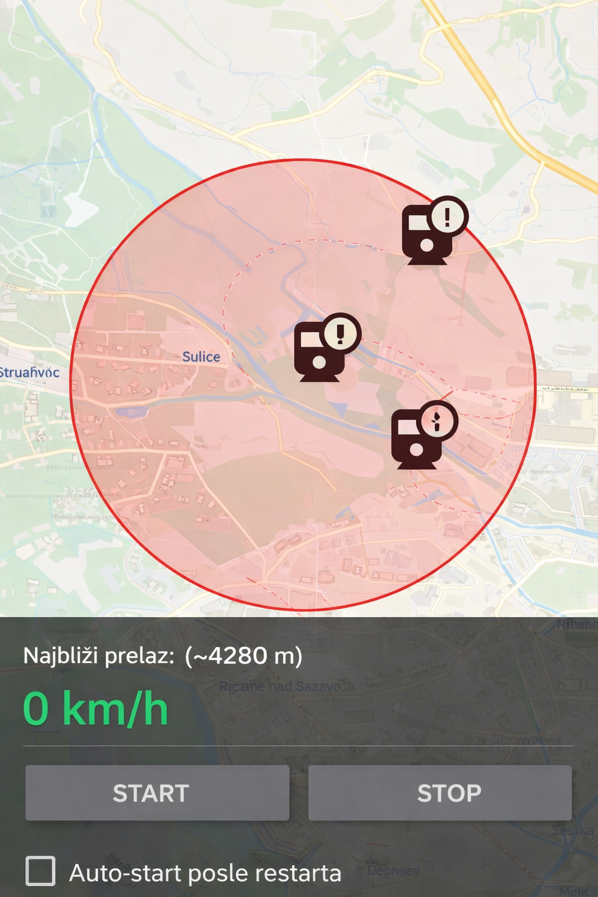
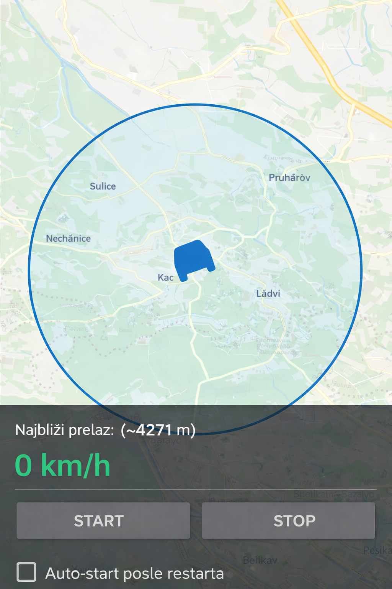
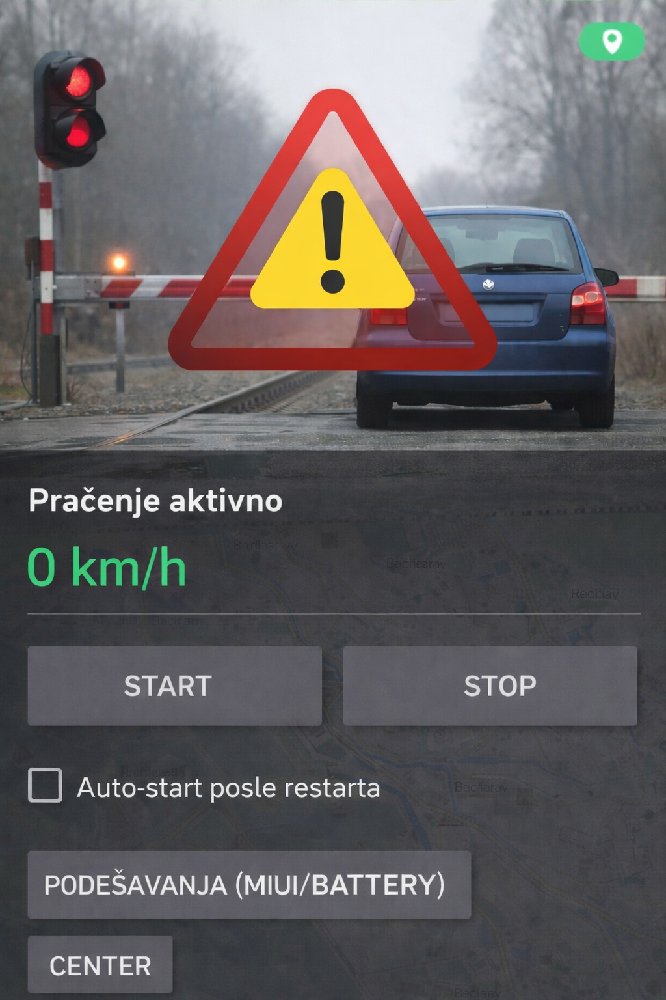
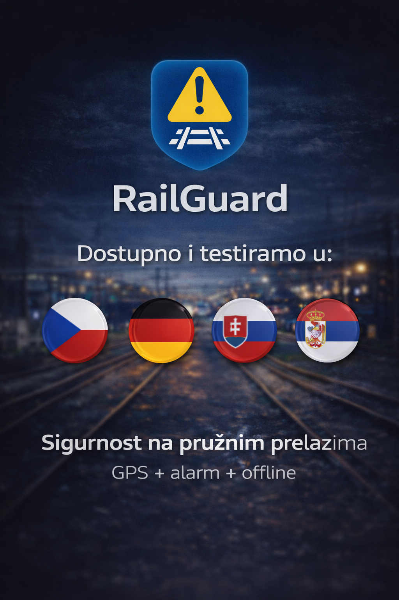
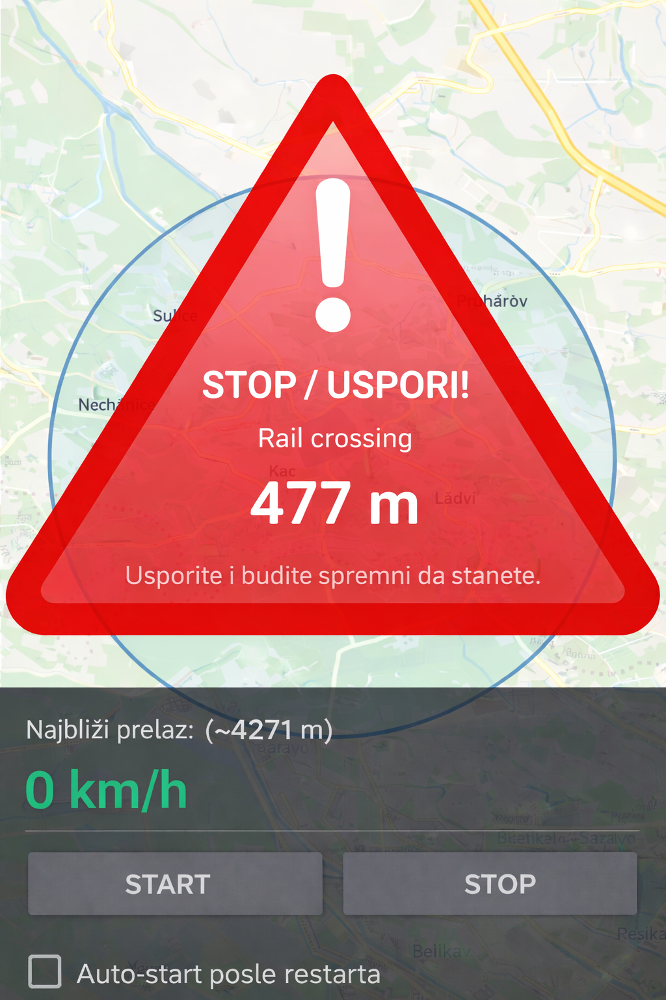

RailGuard – pametna zaštita na pružnim prelazima
Aplikacija koja upozorava na mogući nailazak voza pomoću GPS-a, baze prelaza i voznog reda — čak i kada nema rampe ili signala.
Upozorenje u blizini
Automatski alarm kada se približavaš pružnom prelazu (<500 m).

Procena nailaska voza
GTFS / NetEx analiza reda vožnje i verovatnoće prolaska.

Radi i bez interneta
Lokalna baza prelaza – pouzdano u šumi i slabom signalu.

Stojanje ili kretanje
Alarm se aktivira i kada stojiš ispred spuštene rampe.

Više država
Češka, Nemačka, Srbija – postepeno širenje.

Bez distrakcije
Minimalistički interfejs fokusiran isključivo na bezbednost.

RailGuard je u aktivnom razvoju
Traže se beta testeri i tehnička saradnja.